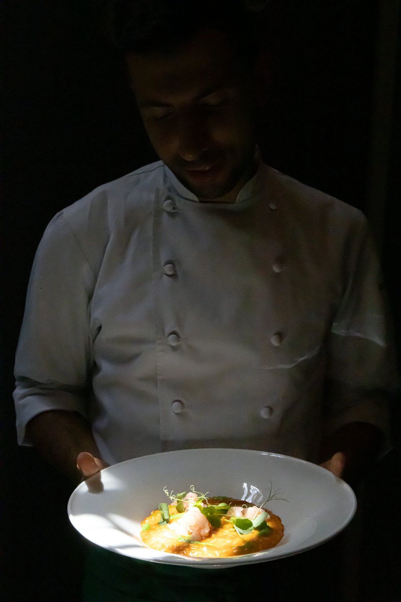
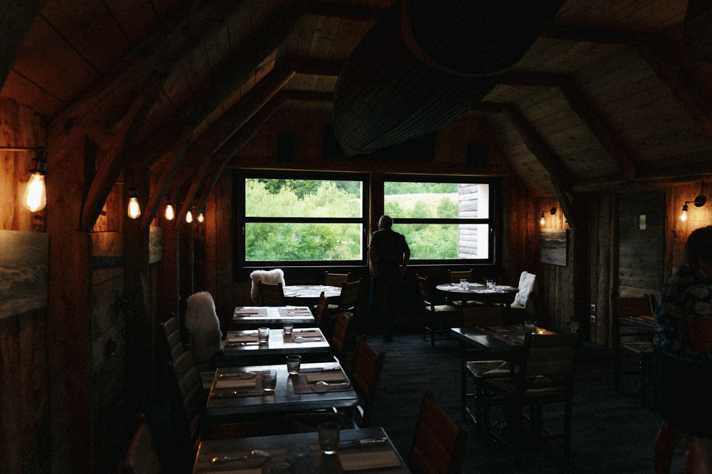

Nordisk matlagning vid havet
Doften av rök, hav och nybakat bröd
Kajkanten Kök & Bar bjuder på säsongens bästa råvaror, tillagade över öppen eld mitt i Ekerös hamn. Boka bord och känn havsluften redan vid dörren.
Boka bord
Boka online dygnet runt eller ring oss. Större sällskap, event och catering ordnar vi gärna.
- Mån–Tors11:00–22:00
- Fre–Lör11:00–23:00
- Söndag12:00–21:00
Ur menyn
Säsongens rätter
Ett smakprov – menyn byts efter årstid. Berätta gärna om allergier vid bokning.

Om oss
Kajkanten Kök & Bar
Kajkanten öppnade 2018 i en gammal magasinsbyggnad nere vid hamnen. Vår kock Elin Sandberg lagar nordisk bistromat med råvaror från traktens producenter – mycket över öppen eld och rök. Här möts hav och skog på tallriken, i en avslappnad miljö med utsikt över kajen.
- Råvaror från lokala producenter
- Öppen eld och egen rökning
- Glutenfritt, laktosfritt & vegetariskt
- Take away på hela menyn
- Catering till fest och företag
Miljö
Hos oss
Vad kunderna säger
Omdömen
★★★★★"Bästa löjromstoasten jag ätit utanför skärgården – och personalen kom ihåg att jag är laktosintolerant utan att jag behövde påminna."
Maria LindqvistEkerö
★★★★★"Bokade bord för åtta till mammas 60-årsdag. Allt flöt på perfekt och maten höll hög klass hela vägen."
Johan BergströmEkerö
★★★★"Mysig stämning, jättegod entrecôte och trevlig personal. Boka i förväg på fredagar – det blir snabbt fullsatt!"
Sara NilssonEkerö
Vanliga frågor
Frågor & svar
Behöver jag boka bord i förväg?
Vi rekommenderar bokning, särskilt fredag–lördag kväll. Boka enkelt via knappen ovan eller ring oss.
Har ni alternativ för allergier och specialkost?
Ja, vi tillagar gärna glutenfritt, laktosfritt och vegetariskt/veganskt. Meddela oss vid bokning eller fråga personalen på plats.
Erbjuder ni take away eller catering?
Ja, hela menyn går att beställa för avhämtning, och vi ordnar catering till fest och företag. Hör av dig minst två dagar i förväg för större beställningar.
Finns det parkering i närheten?
Det finns gatuparkering samt parkeringshus cirka två minuters promenad bort, och vi ligger nära busshållplatsen vid hamnen.
Kan vi boka för större sällskap eller event?
Absolut. Vi tar emot sällskap upp till 40 personer och har ett avskilt utrymme för fester, firmaevent och konferenser. Kontakta oss för offert.
Hör av dig
Boka bord
- Telefon08-560 100 20
- E-postboka@kajkanten.se
- AdressHamngatan 2, 178 30 Ekerö
- Öppettider
- Mån–Tors11:00–22:00
- Fre–Lör11:00–23:00
- Söndag12:00–21:00